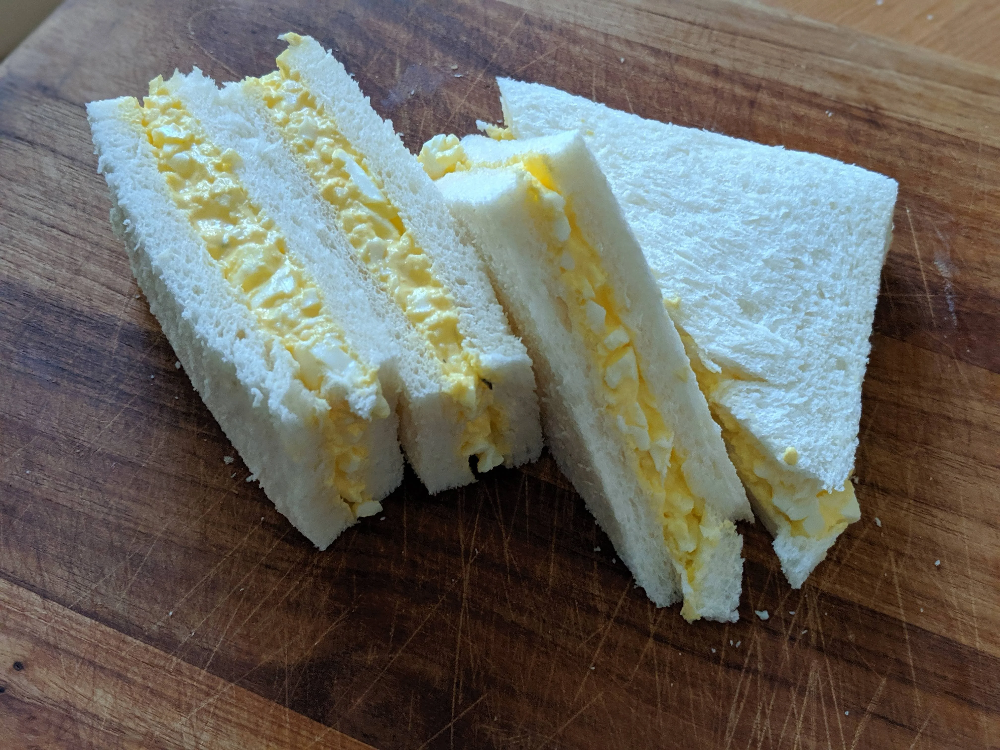

Tamago Sando

What is Tamago Sando?
Tamago (たまご) means eggs and sando is short for san-doh- itchi (サンドイッチ)—sandwich in Japanese. It is a modest, low-maintenance, convenience store sort of food. In comparison with American-style egg sandwiches, Japanese egg sandwich is a lot simpler. Usually just mashed boiled eggs between the bread. There are no spices, lettuce, or anything extra. It’s as pure as an egg salad sandwich can get.
Ingredients
- 4 slices of Japanese milk bread (or just plain ol white bread if unavailable)
- 3 large eggs
- 2 tbsp Japanese Mayonnaise (Kewpie Brand or any other)
- 2 tsp milk
Optional Ingredients
Skip the steps involving optional ingredients if desired.
- 1/4 tsp sugar
- 1/4 kosher sea salt
- 1/8 tsp freshly ground black pepper
- salted butter
Steps
- Boil eggs for 8 minutes.
- Transfer to iced water. Once cooled, peel eggshells.
- Transfer to bowl and mash with fork.
- Add sugar, salt, black pepper, milk and mix
- Set out two slices of bread. Spread the butter on both slices of bread. Evenly distribute the egg salad on one slice of bread.
- Put the other slice of bread on top, buttered side down, and place the sandwich between two plates to compress slightly. Set aside for 5 minutes.
- Cut the crust off the bread.
- Cut the sandwich in half. It’s now ready to serve.
Back